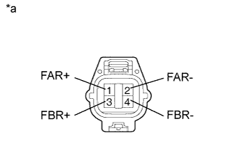
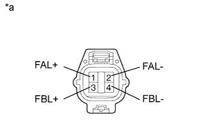
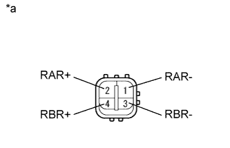
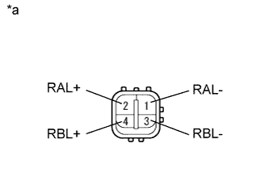

DTC C1731/31 Цепь правого переднего привода регулировки демпфирующего усилия |
DTC C1732/32 Цепь левого переднего привода регулировки демпфирующего усилия |
DTC C1733/33 Цепь правого заднего привода регулировки демпфирующего усилия |
DTC C1734/34 Цепь левого заднего привода регулировки демпфирующего усилия |
| Код DTC | Условие обнаружения DTC | Неисправный участок |
| C1731/31 | Выполняется любое из следующих условий:
|
|
| C1732/32 | Выполняется любое из следующих условий:
|
|
| C1733/33 | Выполняется любое из следующих условий:
|
|
| C1734/34 | Выполняется любое из следующих условий:
|
|
| 1.ВЫПОЛНИТЕ АКТИВНУЮ ДИАГНОСТИКУ С ПОМОЩЬЮ ПОРТАТИВНОГО ДИАГНОСТИЧЕСКОГО ПРИБОРА (DAMPER STEP) |
Выключите зажигание.
Подсоедините портативный диагностический прибор к DLC3.
Включите зажигание (IG).
Включите портативный диагностический прибор.
Войдите в следующие меню: Chassis / Air suspension / Active Test.
| Информация на дисплее прибора | Испытываемое устройство | Диапазон регулирования | Замечание по диагностике |
| Damper Step FR | Изменение шага демпфирования (правого переднего амортизатора) | Шаги с 1 по 17 | По мере увеличения шага демпфирования жесткость амортизатора повышается. |
| Damper Step FL | Изменение шага демпфирования (левого переднего амортизатора) | Шаги с 1 по 17 | По мере увеличения шага демпфирования жесткость амортизатора повышается. |
| Damper Step RR | Изменение шага демпфирования (правого заднего амортизатора) | Шаги с 1 по 17 | По мере увеличения шага демпфирования жесткость амортизатора повышается. |
| Damper Step RL | Изменение шага демпфирования (левого заднего амортизатора) | Шаги с 1 по 17 | По мере увеличения шага демпфирования жесткость амортизатора повышается. |
|
| ||||
| OK | ||
| ||
| 2.ПРОВЕРЬТЕ ПРИВОД АМОРТИЗАТОРА |
Выключите зажигание.
Проверьте привод правого переднего амортизатора (в случае вывода DTC C1731/31).
Отсоедините разъем A56 привода.
|  |
Измерьте сопротивление в соответствии со значениями, приведенными в таблице ниже.
| Контакты для подключения диагностического прибора | Режим | Заданные условия |
| 1 (FAR+) - 2 (FAR-) | Всегда | 6,4 - 7,2 Ом |
| 3 (FBR+) - 4 (FBR-) | Всегда | 6,4 - 7,2 Ом |
| *a | Устройство с неподсоединенным жгутом проводов (привод правого переднего амортизатора) |
Проверьте привод левого переднего амортизатора (в случае вывода DTC C1732/32).
Отсоедините разъем A57 привода.
|  |
Измерьте сопротивление в соответствии со значениями, приведенными в таблице ниже.
| Контакты для подключения диагностического прибора | Режим | Заданные условия |
| 1 (FAL+) - 2 (FAL-) | Всегда | 6,4 - 7,2 Ом |
| 3 (FBL+) - 4 (FBL-) | Всегда | 6,4 - 7,2 Ом |
| *a | Устройство с неподсоединенным жгутом проводов (привод левого переднего амортизатора) |
Проверьте привод правого заднего амортизатора (в случае вывода DTC C1733/33).
Отсоедините разъем S1 привода.
|  |
Измерьте сопротивление в соответствии со значениями, приведенными в таблице ниже.
| Контакты для подключения диагностического прибора | Режим | Заданные условия |
| 1 (RAR-) - 2 (RAR+) | Всегда | 6,4 - 7,2 Ом |
| 3 (RBR-) - 4 (RBR+) | Всегда | 6,4 - 7,2 Ом |
| *a | Устройство с неподсоединенным жгутом проводов (привод правого заднего амортизатора) |
Проверьте привод левого заднего амортизатора (в случае вывода DTC C1734/34).
Отсоедините разъем S4 привода.
|  |
Измерьте сопротивление в соответствии со значениями, приведенными в таблице ниже.
| Контакты для подключения диагностического прибора | Режим | Заданные условия |
| 1 (RAL-) - 2 (RAL+) | Всегда | 6,4 - 7,2 Ом |
| 3 (RBL-) - 4 (RBL+) | Всегда | 6,4 - 7,2 Ом |
| *a | Устройство с неподсоединенным жгутом проводов (привод левого заднего амортизатора) |
| Результат | Следующий шаг |
| OK | А |
| NG (привод правого переднего амортизатора) | B |
| NG (привод левого переднего амортизатора) | C |
| NG (привод правого заднего амортизатора) | D |
| NG (привод левого заднего амортизатора) | E |
|
| ||||
|
| ||||
|
| ||||
|
| ||||
| А | |
| 3.ПРОВЕРЬТЕ ЖГУТ ПРОВОДОВ И РАЗЪЕМ (ПРИВОД АМОРТИЗАТОРА – ЭБУ УПРАВЛЕНИЯ ПОДВЕСКОЙ) |
Проверьте привод переднего амортизатора.
Отсоедините разъемы A56 и/или A57 привода переднего амортизатора.
Отсоедините разъем A14 ЭБУ управления подвеской.
Измерьте сопротивление в соответствии со значениями, приведенными в таблице ниже.
| Контакты для подключения диагностического прибора | Условие | Заданные условия |
| A56-1 (FAR+) - A14-7 (FAR+) | Всегда | Менее 1 Ом |
| A56-2 (FAR-) - A14-8 (FAR-) | Всегда | Менее 1 Ом |
| A56-3 (FBR+) - A14-1 (FBR+) | Всегда | Менее 1 Ом |
| A56-4 (FBR-) - A14-2 (FBR-) | Всегда | Менее 1 Ом |
| A56-1 (FAR+) - масса | Всегда | 10 кОм или более |
| A56-2 (FAR-) - масса | Всегда | 10 кОм или более |
| A56-3 (FBR+) - масса | Всегда | 10 кОм или более |
| A56-4 (FBR-) - масса | Всегда | 10 кОм или более |
| Контакты для подключения диагностического прибора | Условие | Заданные условия |
| A57-1 (FAL+) - A14-3 (FAL+) | Всегда | Менее 1 Ом |
| A57-2 (FAL-) - A14-5 (FAL-) | Всегда | Менее 1 Ом |
| A57-3 (FBL+) - A14-6 (FBL+) | Всегда | Менее 1 Ом |
| A57-4 (FBL-) - A14-4 (FBL-) | Всегда | Менее 1 Ом |
| A57-1 (FAL+) - масса | Всегда | 10 кОм или более |
| A57-2 (FAL-) - масса | Всегда | 10 кОм или более |
| A57-3 (FBL+) - масса | Всегда | 10 кОм или более |
| A57-4 (FBL-) - масса | Всегда | 10 кОм или более |
Проверьте привод заднего амортизатора.
Отсоедините разъемы S1 и/или S4 привода заднего амортизатора.
Отсоедините разъем R19 ЭБУ управления подвеской.
Измерьте сопротивление в соответствии со значениями, приведенными в таблице ниже.
| Контакты для подключения диагностического прибора | Условие | Заданные условия |
| S1-1 (RAR-) - R19-2 (RAR-) | Всегда | Менее 1 Ом |
| S1-2 (RAR+) - R19-1 (RAR+) | Всегда | Менее 1 Ом |
| S1-3 (RBR-) - R19-4 (RBR-) | Всегда | Менее 1 Ом |
| S1-4 (RBR+) - R19-3 (RBR+) | Всегда | Менее 1 Ом |
| S1-1 (RAR-) - масса | Всегда | 10 кОм или более |
| S1-2 (RAR+) - масса | Всегда | 10 кОм или более |
| S1-3 (RBR-) - масса | Всегда | 10 кОм или более |
| S1-4 (RBR+) - масса | Всегда | 10 кОм или более |
| Контакты для подключения диагностического прибора | Условие | Заданные условия |
| S4-1 (RAL-) - R19-6 (RAL-) | Всегда | Менее 1 Ом |
| S4-2 (RAL+) - R19-5 (RAL+) | Всегда | Менее 1 Ом |
| S4-3 (RBL-) - R19-8 (RBL-) | Всегда | Менее 1 Ом |
| S4-4 (RBL+) - R19-7 (RBL+) | Всегда | Менее 1 Ом |
| S4-1 (RAL-) - масса | Всегда | 10 кОм или более |
| S4-2 (RAL+) - масса | Всегда | 10 кОм или более |
| S4-3 (RBL-) - масса | Всегда | 10 кОм или более |
| S4-4 (RBL+) - масса | Всегда | 10 кОм или более |
|
| ||||
| OK | ||
| ||